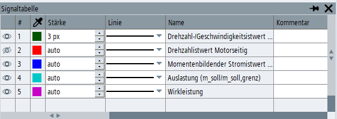

In der Signaltabelle können Sie eine Trace-Aufzeichnungskonfiguration anzeigen bzw. bearbeiten oder die Anzeige von Signalkurven im Trace-Widget konfigurieren.
Fenster anordnen
Die Signaltabelle kann über das Kontextmenü, die Symbolleiste oder mit dem Softkey "Signaltabelle" geöffnet und geschlossen werden und kann auch über das Symbol
 auf dem Fensterrahmen geschlossen werden.
auf dem Fensterrahmen geschlossen werden.Die Signaltabelle kann mit dem Symbol an das Trace-Widget angedockt oder auch auf einem PC/IPC-System als frei bewegliches Fenster angezeigt werden. Wenn der Inhalt des Rasters nicht innerhalb der verfügbaren Höhe oder Breite angezeigt werden kann, werden automatisch vertikale und/oder horizontale Scroll-Leisten eingeblendet.
Signale anordnen
Das aktive Signal im Trace-Diagramm kann verändert werden durch:
Doppelklick auf eine beliebige Zelle in einer Zeile, wenn die Zelle Textdaten enthält, z. B. den Signalnamen oder die Signaladresse
Das aktive Signal ändert sich nicht, wenn die Zelle, auf die doppelt geklickt wird, eine Klappliste oder ein Symbol enthält.
Drücken der Umschalttaste (Ziffernblock 5, ohne NumLock, auf einer PC-Tastatur) auf einer beliebigen Zelle in einer Zeile
Die Zeilen des Rasters können durch Ziehen der Signalnummer neu angeordnet werden. Die Reihenfolge der Signale in der Konfiguration wird in der Trace-Sitzungsdatei gespeichert und wird wiederhergestellt, wenn die Datei erneut geladen wird.
Die Spalten können durch Ziehen der Spaltenüberschrift neu angeordnet werden. Veränderungen der Spaltenanordnung werden jedoch nicht mit der Trace-Konfiguration gespeichert und werden zurückgesetzt, wenn die Bedienoberfläche neu gestartet wird.
Wenn die Anwendung einen Fehler in der Trace-Konfiguration erkennt, werden die betroffenen Rasterzellen rot eingefärbt. Bei diesen Zellen kann außerdem ein Tool-Tipp vorhanden sein, der auf die Fehlerursache hinweist.
Weitere Vorgehensweise
So nutzen Sie die Symbole für die Signalverwaltung.
So fügen Sie die Variablen für Antriebs- und NC/PLC-Trace in die Signaltabelle ein.
So bearbeiten Sie Variablenadressen und Parameter.
Passen Sie für eine übersichtliche Auswertung die Linienbreite und Linienart an.
Fügen Sie dem Signal Kommentare als zusätzliche Information hinzu.
Fassen Sie zueinander gehörende Skalen und Signale in Gruppen zusammen.
So erhalten Sie zusätzliche Zwischenwerte zu den Start- und Endmesspunkten.
Prüfen Sie die physikalischen Einheiten der Signale, wenn Sie Daten eines anderen Systems nutzen.